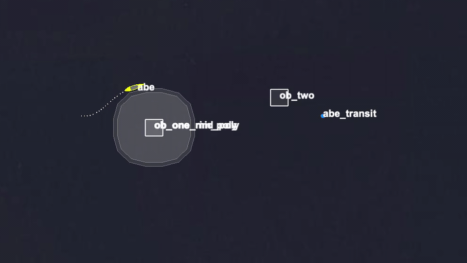
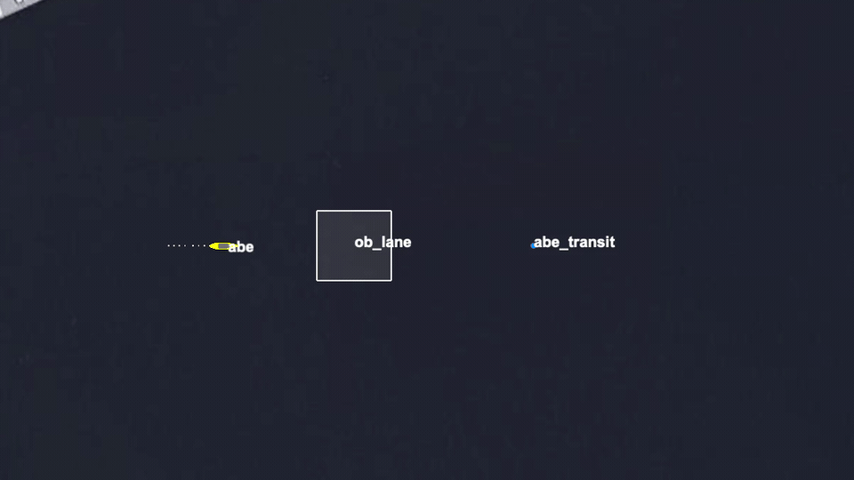

Stem Mission
Baseline scenario context
The stem mission runs one ownship through deterministic obstacle layouts with obstacle-manager input held stable. The cases focus on what BHV_AvoidObstacleV24 requests, flags, and resolves.
Behavior Correctness
Behavior correctness tests for BHV_AvoidObstacleV24. These cases isolate the behavior-owned contract for obstacle alert requests, helper flags, lifecycle evidence, resolution signals, and clean transit outcomes.
Stem Mission
The stem mission runs one ownship through deterministic obstacle layouts with obstacle-manager input held stable. The cases focus on what BHV_AvoidObstacleV24 requests, flags, and resolves.
Examples


Case Matrix
default_auto_request_pass
Baseline one-obstacle case. The behavior should request alerts, engage, complete, and still arrive with zero collisions.
rng_flag_pass
The behavior is case-specific with rng_flag=<20 AVOID_RANGE_SEEN=true. The mission passes only if that behavior-owned range flag is actually seen.
cpa_flag_pass
The behavior is case-specific with cpa_flag=AVOID_CPA_SEEN=true. This is a more niche path because the flag only posts after a real CPA event is observed. This...
offlane_no_engagement_pass
The obstacle is moved well above the lane. The behavior should still request its alert path, but it should never receive an obstacle alert or run.
no_refinery_pass
The behavior is case-specific with use_refinery=false. This keeps the same geometry, but exercises a different internal objective-building path.
two_obstacles_clean_pass
Two obstacles are placed in the corridor with one lower and one upper bias. This is the suite's multi-obstacle clean-completion case: the vehicle should still...
avoid_disabled_fail
The behavior is case-specific so its AVOID=true condition can never hold. The alert request still happens, but the avoid-obstacle lifecycle should fail to...